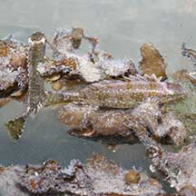
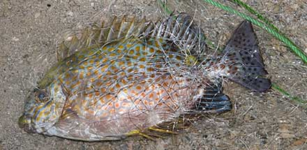
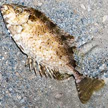
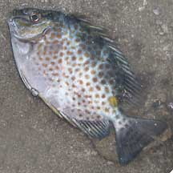
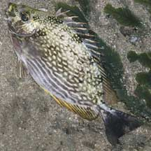

|
|
| fishes text index | photo index |
| Phylum Chordata > Subphylum Vertebrata > fishes |
| Rabbitfishes Family Siganidae updated Oct 2020
Where seen? These fishes may be common in seagrass areas on many of our shores. They often lie quietly among seagrasses or hidden among coral rubble, relying on their camouflage to avoid detection. What are rabbitfishes? They belong to Family Siganidae. According to FishBase: the family has 2 genera and 25 species. They are found in the Indo-Pacific and Mediterranean seas. Features: Can be quite small (about 8cm or less) to quite large (about 15cm). It is named for its rabbit-like snout ('siganus' means 'has a nose like a rabbit') or possibly for its habit of grazing on seaweeds. It is also called Spinefoot after the spines on its pelvic fins, a unique feature of this family. It has tiny scales. |
 Juveniles often seen among Sargassum. There are two here, can you spot them? Changi, Apr 07 |
 Spines on the dorsal fin raised: these can inject a painful venom. Chek Jawa, Aug 02 |
|
 Rabbitfishes are often seen trapped in fishing nets. Terumbu Semakau, Jun 11 |
| What do they eat? Most rabbitfishes
are herbivores, grazing on algae that grows on the sea bottom, seaweeds
and seagrasses. They have small mouths with tiny teeth. They are active
during the day, and sleep at night. Rabbitfishes often travel in schools,
sometimes in pairs. Human uses: The White-spotted rabbitfish (Siganus canaliculatus) is highly sought after for eating during the Chinese Lunar New Year. At this time, the fishes breed and their roe are particularly relished. Called 'Pei Tor', the Chinese believe it eating it brings good luck. Other species are important foodfishes in other parts of the world. Some of the more colourful reef rabbitfishes are also collected for the aquarium trade. |
| Some Rabbitfishes on Singapore shores |
 White-spotted rabbitfish |
 Orange-spotted rabbitfish |
 Streaked rabbitfish |
| Family
Siganidae recorded for Singapore from Wee Y.C. and Peter K. L. Ng. 1994. A First Look at Biodiversity in Singapore. **from WORMS
|
Links
References
|